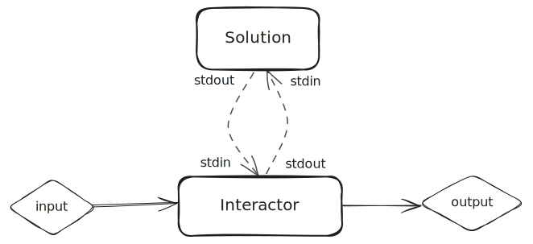
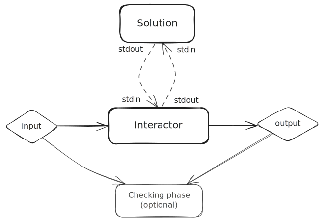

Interactors#
Interactor is a concept introduced by testlib to play the role of an agent that
communicates with the participant's solution through the pair stdin/stdout in
interactive problems.
You can read more about what is an interactive problem in this thorough Codeforces blog post written by Mike Mirzayanov.
In this section, we will see how to write an interactive problem and how to define an interactor for it in rbx.
Motivational problem#
Let's assume we have a problem that asks you to find a number between 1 and N, where N is between 2 and 1000.
You should find it with at most 10 guesses to the interactor. A guess is a line in the format ? X, where X is a number between 1 and N.
The interactor will first give you the value of N, and then respond each guess with <, > or = if the guess is less than, greater than or equal to the secret number, respectively. When responding with =, the game ends and the solution should finish execution.
Let's assume the secret number is 7. A possible interaction between the solution and the interactor is the following:
| Agent | Line | Description |
|---|---|---|
| Interactor | 10 |
Tells participant that N = 10 |
| Participant | ? 5 |
The participant guesses 5 |
| Interactor | < |
5 is less than the secret number |
| Participant | ? 7 |
The participant guesses 7 |
| Interactor | = |
7 is equal to the secret number |
| - | Both agents finish execution |
Preliminary definitions#
Let's first of all define an interactor for the problem. In most cases, the interactor should be the very first component to be written in an interactive problem, because it is particularly hard to write solutions and test them before having one defined.
Tip
Of course, you can always interactively run your solution.
Feel free to use the rbx compile <solution> command to compile them, and run them by
executing build/exe from your project's root directory.
In this case, you will interactively write to the solution's stdin, essentially playing the role of the interactor.
A testlib interactor consists of an executable that receives two arguments:
Besides these two files, the interactor also communicates with the solution through the stdin/stdout files.
The interactor:
- Receives the test input from the
input_file(the participant can't see this file); - Writes some logging output to the
output_file(the participant can't see this file); - Reads the participant's output from
stdin; - Writes the participant's input into
stdout.
This structure is depicted in the following diagram:

Thus, even though the communication between the two agents is done through stdin/stdout, the interactor
still has its own input and output files that can have a similar purpose to the inputs and outputs of an usual
batch problem.
For this problem, let's assume we have a testset containing some input files containing two numbers: N and
the secret number S, with 1 <= S <= N <= 1000. We can also assume we've written a validator for this file.
Note
Notice validators will receive the input file the interactor reads from, not the stdin of the participant's solution.
The interactor#
You can read more about testlib interactors in the official testlib documentation.
Now that we have our input formally defined, let's write a testlib interactor and set it up in our problem.
You can see in the commented code below how to read from each of the files available to the interactor.
-
Reads the two input numbers from the input file.
This was either provided by a generator or manually by you.
-
Reads the maximum number of guesses allowed from the rbx variables.
We defined this would be 10 in the statement above, but let's define this as a variable as a good practice.
-
Reads the participant's guess from the
stdinof the interactor /stdoutof the solution.Notice we also check it is within bounds.
-
Writes back the response to the guess to the
stdoutof the interactor /stdinof the solution.We use the common C++
std::coutstream for that. -
In case the solution is correct, writes the number of guesses to the output file for logging purposes (in some judging systems, you can inspect this file, for instance).
We use the C++
toutstream for that.
Executing solutions against the interactor#
Solutions for interactive problems can be executed normally, similar to batch problems, with the rbx run
and rbx irun commands.
Read more about them in the Running solutions section.
Warning
When providing a custom input for rbx irun, you're actually providing the input to the interactor,
NOT the solution.
The results of the run can also be inspected using the rbx ui command.
If you want to compile the solution, and interactively communicate with it as if you were the interactor agent,
you can compile your solution with the rbx compile command and then run it manually with ./build/exe.
rbx compile solution.cpp
./build/exe
# ... start interacting with the solution as the interactor ...
Do I need to write a checker?#
Short answer: no, you don't need to write a checker. In fact, the ICPC package format doesn't support one.
Instead, this format expects the interactor to both communicate with the solution and judge it. Other judging systems do support specifying a checker, and some even require one (e.g., Polygon). However, this practice is not encouraged by rbx, as it is not part of the ICPC package format.
Tip
rbx will automatically generate a dummy/no-op checker when you generate a package for a judging system that requires one. You should not worry about this!
rbx does give you the flexibility to specify a checker by setting an extra bit in the problem.rbx.yml file. This is put
there as a guard so you don't mistakenly set a checker for your interactive problem without realizing it.
# ...
type: COMMUNICATION
interactor:
path: 'interactor.cpp'
legacy: true
checker:
path: 'checker.cpp'
The newly defined checker will read as the outputs for the participant's and the jury's solutions the output_files
produced by their interactor runs (whatever was written into tout).

Then, you could split the previously defined interactor into two files as such:
Incompatible with ICPC
This is not part of the ICPC package format, and thus rbx will throw an error if you try to generate an ICPC package for an interactive problem that has a checker.
The solution will be to migrate the checker into the interactor.